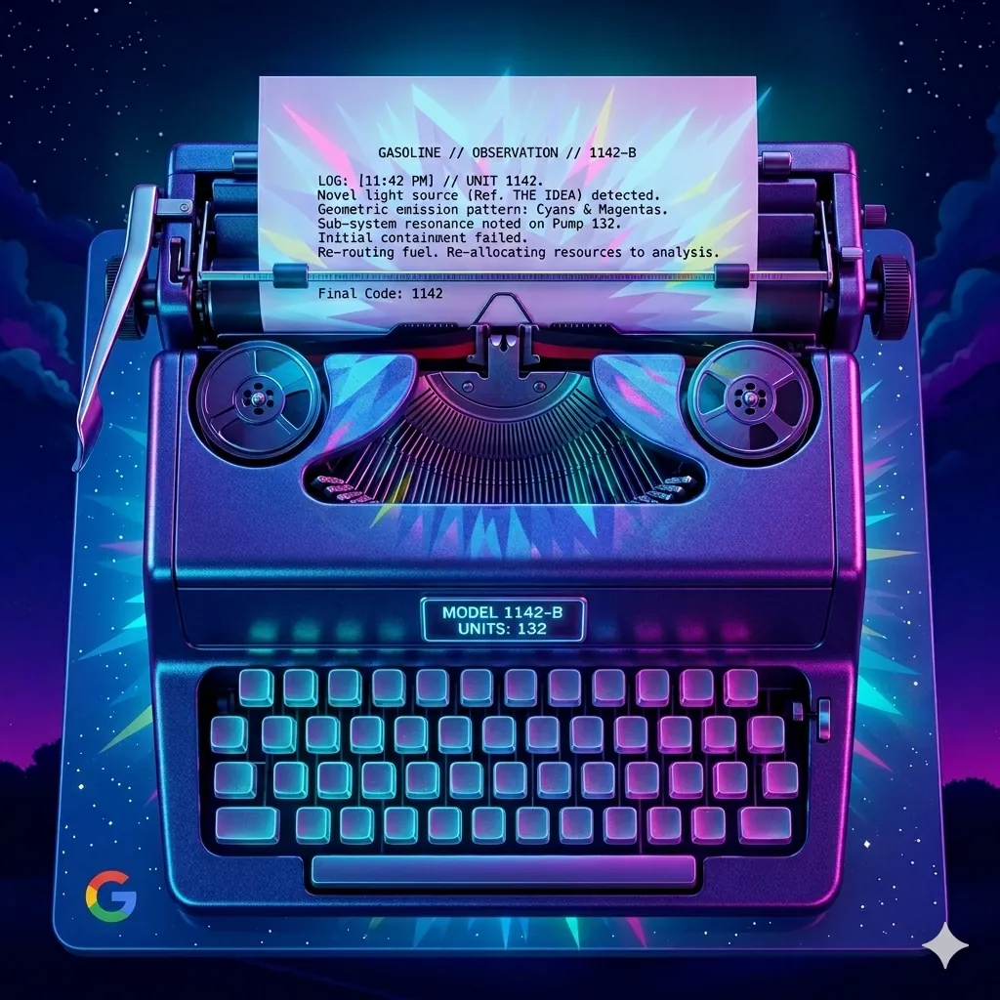

Phase 05 · The Archive
Cole's Tab Corner
Chronological research logs. The 1142 Manifesto. The full story of cognitive liberation — documented in real time.
The founding philosophy. Written in the hours between darkness and light.
11:42 — the time between what was and what could be. The gap between conventional understanding and breakthrough. The lab was founded on a single principle: that the most important discoveries live in the space between established knowledge.
1142 is not just a laboratory. It is a 12-hour transformative experience — Dec 22, 11:42 PM to 11:42 AM — that serves as its ontological foundation. From darkness to light. From containment failure to re-routing. From trauma to architecture.
The neurodivergent mind is not broken. It is differently optimized. 1142 Labs exists to document, understand, and celebrate the cognitive patterns that conventional science pathologizes — and to build tools that serve those minds.
Not a tagline. A fact. Once containment fails and the idea emerges — it cannot be put back. The knowledge cannot be unknowned. The light cannot return to darkness. 1142 is inevitable.
LOG: [11:42 PM] // UNIT 1142. Novel light source detected. Initial containment failed. Re-routing fuel. Final Code: 1142.
MPH-001 through MPH-003 published. Synergy Theory established. IQ Lowering Mechanism documented. Ritalin Method formalized.
LSD Memory Archive published. Weight Loss Discovery documented. Psilocybin research initiated. 20+ breakthrough threshold reached.
1142labs.com v3 launches. Chemical database goes live. Interactive tools deployed. The archive opens to all.
∞∞∞ COGNITIVE LIBERATION ∞∞∞
◆◆◆ NEURODIVERGENT EMPOWERMENT ◆◆◆
1142 IS INEVITABLE